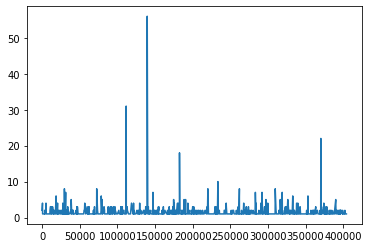
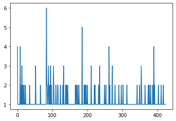
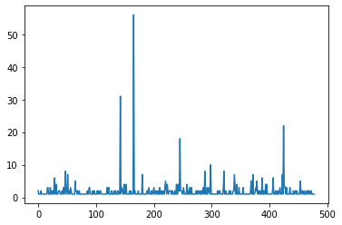
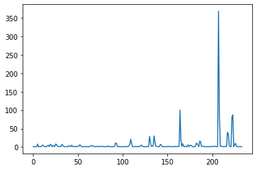
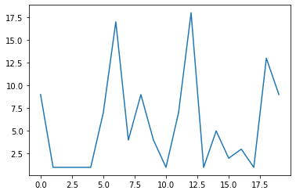
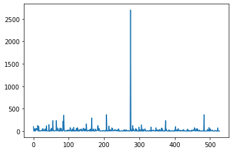
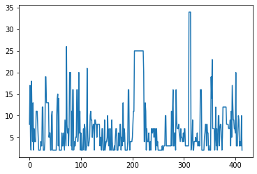

The problem
Some users of the platform join and never pay, others pay. The analysis asks which first-week behaviours stand out and how paid and unpaid users differ. The first week is the join date plus six days.
- How many users buy within their first week?
- How many tracks (course subjects) do they subscribe to?
- How much do they attempt, pause and complete quizzes?
- How often do they watch videos, and how much of each video?
- Who are the heaviest quiz and study-card users?
Method
- Load five CSV files: track subscriptions, first purchases, quiz attempts, study-card events and video watches.
- Separate users with no first-purchase date (unpaid) from those with one (paid) and attach each user's join date.
- Keep events inside the first-week window.
- Aggregate per user with
groupby: tracks, quiz rows per status, distinct watch days, completions, study-card events. - Flag users above simple thresholds and plot the per-user counts.
There is no statistical test and no model. The notebook is entri .ipynb in the repository.
Findings
Reported (notebook output) Each number below is printed in the notebook's saved output. The notebook was re-run on 2026-10-13 and repeated them.
- 576users with a recorded first purchase
- 478of them bought within 7 days of joining
- 424users with no first-purchase date
- 16unpaid users with more than 2 tracks
- 21paid users with more than 4 tracks in week one
- 630users attempted a quiz; 126 of them are unpaid
- 528users completed a quiz at least once
- 56users completed more than 50 attempts
- 13users watched videos on more than one day of week one
- 386users have study-card activity
Quiz attempts by status: 13,833 complete, 6,950 created, 489 paused, 147 in progress.
In short, most users with a purchase bought in week one (478 of 576), and a small group of users accounts for very heavy quiz and study-card activity. The notebook does not test whether any behaviour predicts buying.
Charts from the notebook
Exported unchanged from the notebook's saved outputs. Each line plots a per-user count. Except for the first chart, which is drawn against user ID, the x axis is a row position in a table, not time. The charts show spread and outliers, not trends.







Limitations
- Descriptive only: no tests, intervals or causal claims.
- Thresholds (2 or 4 tracks, 30% or 80% of a video, 10 or 50 attempts) are arbitrary.
- Some notebook comments disagree with the notebook's printed outputs. This page uses the printed outputs.
- On current pandas (3.x) one figure changes: unpaid quiz users become 83 instead of 126, because the text
Nonein one column is now read as missing. The pinned pandas 1.5.3 reproduces 126. - One company and a few months of 2021 data, so the findings do not generalise.
Next steps: label the axes and plot against ordered values, compare paid and unpaid users with a test or bootstrap interval, then fit a simple conversion model with a time-based split.
Data and licence
The data is a company-provided user-activity dataset (© its owner), credited in THIRD_PARTY_NOTICES.md. Users appear only as numeric pseudonymous IDs, with no names or contact details. It is not the repository owner's own dataset.
The analysis and code are © Jane Rose Ferdinant, licensed CC BY-NC-SA 4.0. The licence does not cover the data.